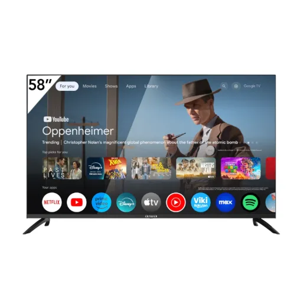
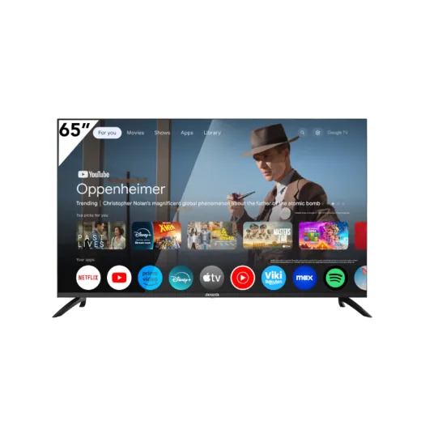
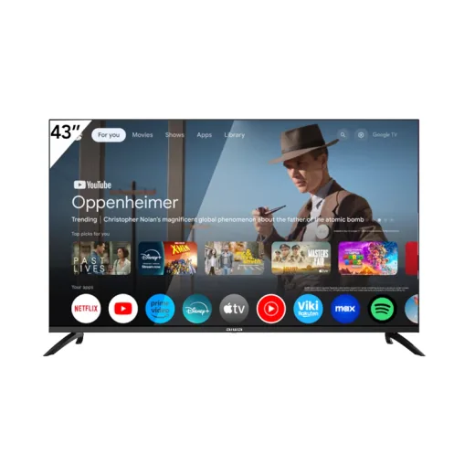

Aiwa · Modelo AW58B2G
Televisor Aiwa 58" LED 4K Smart · AW58B2G
L 11,599
En Acosa
Precio en cada tienda
| Tienda | Precio | Antes | Disponibilidad | |
|---|---|---|---|---|
| Acosa | L 11,599 | Disponible | Ver en tienda › |
Precios referenciales tomados de cada tienda el 21 de noviembre de 2026. El precio válido es el que muestra la tienda al comprar.
Historial de precio
Lo seguimos desde el 5 de noviembre. Precio más bajo registrado: L 11,599 en Acosa (7 de noviembre), igual que hoy. Cambios de precio registrados: 1.
Características
| Marca | Aiwa |
|---|---|
| Número de parte | AW58B2G |
| Garantía | 12 Meses |
| Pantalla | 58" |
| Resolución | 4K UHD |
| Panel | LED |
Descripción
El Smart TV Aiwa de 58 pulgadas es un televisor de gran formato diseñado para ofrecer una experiencia cinematográfica en casa. Combina la ultra alta definición 4K con la potencia de la plataforma Google TV, lo que garantiza una calidad de imagen superior y acceso ilimitado a contenido inteligente.
ESPECIFICACIONES GENERALES
• Peso: 16,380kg.
• Contenido del empaque: 1 Smart TV Aiwa de 58 pulgadas.
DETALLES:
• Tamaño de Pantalla: 58 pulgadas (Ideal para salas grandes o espacios donde se busca un gran impacto visual).
• Resolución: 4K Ultra HD (UHD) 3840 x 2160 píxeles.
• Frecuencia 60 Hz.
Otros televisores Aiwa

Televisor Aiwa 58" LED 4K Smart · AW58B4KFGL 12,459En Acosa
Televisor Aiwa 65" QLED 4K Smart · AW65B2QL 13,995.01En Acosa Televisor Aiwa 50" QLED 4K Smart · AW50B4QL 8,995En Acosa
Televisor Aiwa 50" QLED 4K Smart · AW50B4QL 8,995En Acosa Televisor Aiwa 43" QLED 4K Smart · AW43B4QL 8,095En Acosa
Televisor Aiwa 43" QLED 4K Smart · AW43B4QL 8,095En Acosa Televisor Aiwa 50" LED 4K Smart · AW50B4KFGL 7,990En Acosa
Televisor Aiwa 50" LED 4K Smart · AW50B4KFGL 7,990En Acosa
Televisor Aiwa 43" LED Full HD Smart · AW43B4SFGL 5,990.01En Acosa Televisor Aiwa 32" LED HD Smart · AW32B4SMGL 3,990.01En Acosa
Televisor Aiwa 32" LED HD Smart · AW32B4SMGL 3,990.01En Acosa Televisor Aiwa 75" QLED 4K Smart · AW75B4QFGL 19,990En Acosa
Televisor Aiwa 75" QLED 4K Smart · AW75B4QFGL 19,990En Acosa